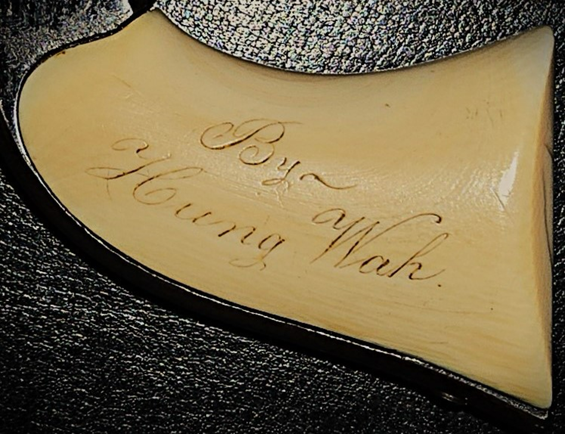

In Ghosts of Gold Mountain: The Epic Story of the Chinese Who Built the Transcontinental Railroad (Houghton Mifflin Harcourt, 2019), I anchor the story on the life of Hung Wah, a Chinese labor contractor, who lived in Auburn, California in the 1860s. He may have been the first Chinese labor contractor that the Central Pacific Railroad reached to recruit and hire Chinese workers. Relying on a variety of sources, including newspaper articles, pay roll records, and census reports, I weave his life through the larger history of the workers. Details about his life, though, have been difficult to gather.
We now we have a surprising development!
Historian and gun collector, Don Jones, who resides in New Jersey, has reached me with stunning news of a historical artifact he has obtained. Jones, who has published many research essays and served for twelve years as the Historian for the Colt Collectors Association, has shared with me images of a .28 caliber Colt revolver with words clearly engraved on each side of the ivory handle. One side reads: “Presented to Wm. Osburn, May 22d, 1860”. The other side reads: “By Hung Wah.” Images of the gun appear below.


The writing in script is clear, skillful, and deliberate. Black ink highlights the carving. It is almost certainly a gift from Hung Wah, an ambitious member of the Auburn Chinese community, to William Osburn, another local resident who, according to Jones, ran in an election for town constable at this time. Osburn had regular contact with Chinese in the region, according to Jones’s reading of local newspapers.
Jones obtained the firearm from another collector and says that according to its serial number, it was made in 1860 in Hartford, Connecticut. The Colt Company was then one of the most important gun manufacturers in the country and had an office in San Francisco. Inscriptions often adorned special objects at the time. The “Golden Spike” used in the May 1869 ceremony at Promontory Summit that concluded the construction of the Transcontinental is elegantly inscribed on all four sides in script like that on the gun handle.
The significance of this artifact is many faceted. It supports the view that Hung Wah was an important and aspiring member of the Auburn Chinese community. In the census of 1860, he is listed as a “miner” and lived with fellow Chinese. He soon would be known as a major labor contractor of Chinese workers in the area. An inscribed revolver would have been an expensive gift. It also suggests that Hung Wah was an active economic--even political--player in the town. Although we don’t know his specific reasons for gifting the gun, a special gift, such as this, would be used to seek to advance a personal relationship with an influential white member of the town. Hung Wah seems to know that what we today call “networking” was an important part of doing business in America. The inscription also suggests that Hung Wah was comfortable with the use of the English language at some level. We don’t know if he had full command of English, but he had some way of communicating his ideas to English-speaking audiences. He would have had to work with, and trusted, a local craftsman, to complete the inscription as he wanted. He occasionally ran advertisements in the local newspapers for his businesses, and he was involved in legal proceedings, which were recorded for the record. (For more on Hung Wah, see Ghosts of Gold Mountain).
Further evidence uncovered by Don Jones suggests that the relationship between Hung Wah and William Osburn had developed over many years and continued into the late 1860s. The two were involved in solving a sensational murder that occurred in Auburn in 1867. The victim, William McDaniel, had been a prominent local businessman who regularly interacted with Chinese. William McDaniel was in fact an associate of Hung Wah. One of Hung Wah’s newspaper advertisements for his business as a Chinese laborer contractor concludes with: “References: William McDaniel.”
On January 9, he was killed during a night-time robbery of his store, which was located across the street from Hung Wah’s establishment. The town’s newspaper closely followed the hunt for the killer and eventually reported that a Chinese man named Ah Sing had committed the violent deed. Key evidence had been provided by William Osburn, who claimed he had overheard Ah Sing describe his involvement in the crime to another Chinese. Osburn, according to the news reports, understood the Chinese language! Jones wonders if Osburn might have carried Hung Wah’s gift revolver during his investigations.
Based on Osburn’s testimony and with the assistance of Hung Wah, who as we have noted in our Chinese Railroad Workers Project, had been close to McDaniel, Ah Sing was convicted of murder and hanged. (I recount the gruesome episode in Ghosts of Gold Mountain.)
Don Jones is continuing to research the “Hung Wah Gun” (as I will call it), including the identities of Hung Wah and William Osburn. He is to be saluted for his generosity in sharing his research and for his interest in the Chinese railroad workers![i]
[i] Thanks go to Roland Hsu and Don Jones for reviewing a previous draft of this essay.